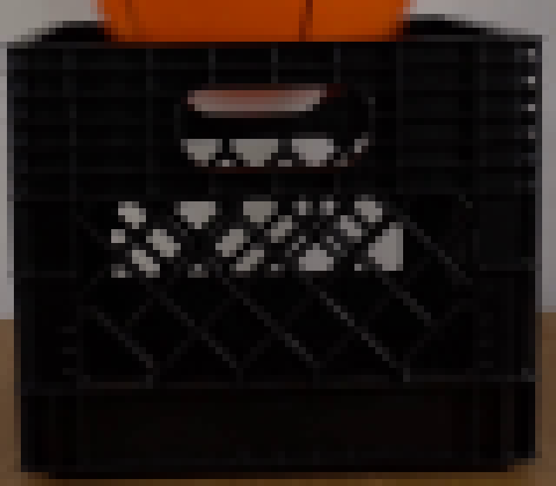
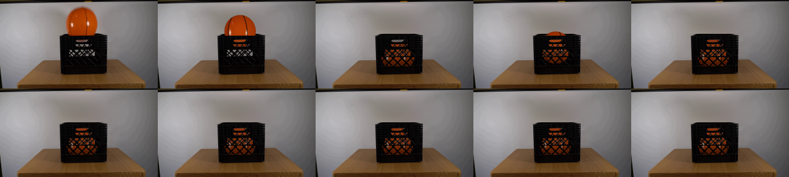
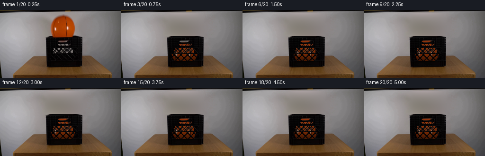

Image + Video + Code + Revision Log
篮球落入黑筐：像素视频如何一步步生成
左侧是可逐帧播放的真实输出；右侧是首帧测量。下方展示二维绘制层、关键代码、检查图和 METHOD 中实际记录的修订阶段。
最终 20 帧
256×144 · 4 fps · 5 秒00 · 0.00s
当前事件：首帧原样保留
首帧转成了哪些约束
篮球x=107..158、y=11..58；橙色中心亮、边缘暗，两条弯曲黑缝，首帧下端已被筐沿遮住。
黑色塑料筐x=98..173、y=55..120；上沿约 y=58，上部细网格、下部菱形网格必须始终挡在球前方。
推定接触筐内真实底部不可见，二维方案假定球底在 y≈115 首次触底，并安排一次主反弹和一次衰减反弹。
固定对象相机、墙、木桌和筐完全静止；只有新画篮球、球影与原球遮挡后的墙面修补发生变化。
每一帧的 RGB 合成顺序
不是移动首帧篮球贴图，而是在当前坐标重新求颜色和覆盖率。
1. 修补墙面两侧可见墙色做逐行 Hermite 插值，并用纵向二次拟合消除条带。
2. 计算运动一维自由落体 + 两段衰减抛物线，接触帧改变 rx/ry 表示压扁。
3. 重画篮球3× 子像素轮廓、二维橙色场、细颗粒、黑缝和白色高光。
4. 建立筐遮挡球先变暗后通过孔洞显示；黑色前壁和两组菱形杆最后盖在球前。
5. 保存 RGB量化到 uint8，并打包成 uint32 0xRRGGBB 张量与 20 PNG。
从初版到最终版：记录中的修订阶段
0014 是早期 pilot，没有保存每次修订前的 pixels.npz；因此这里只展示真实文字记录和最终检查图，不伪造 before 图。
初版生成
完成下落、触底、压扁、反弹和筐网格遮挡
随后逐帧查看 0/1/2/3/4/5/8/12/16/19。中间像素快照未保留。
背景返修
发现原球位置存在圆形墙面修补边缘
把圆形补洞改成更宽的矩形平滑过渡，并加入纵向二次拟合，减少横向采样带。
残影清理
清除筐上沿和提手孔里的原球橙色残留
重新估计孔洞透明度，使新球只通过真实孔洞显示，保持黑色塑料杆在前。
最终验收
确认单球、固定桌筐、连续遮挡和无贴图残影
保留局限：00→01 的摄影篮球到二维重绘仍有可见材质差异。
Agent 实际打开的图

首帧 5× 放大：测篮球轮廓、缝线、高光、筐沿和孔洞。

筐局部：推断上部孔洞与下部菱形网格的二维遮挡。

10 个时点：下落、首次触底、反弹、二次接触与最终稳定。

公共八时点检查表：确认后半段没有无理由运动。
对应的真实代码片段
# 墙面 Hermite 插值
left = source[:,84:97].mean(axis=1)
right = source[:,175:188].mean(axis=1)
z = clip((X-90)/91, 0, 1)
wall = h00*left + h10*91*ls \
+ h01*right + h11*91*rs# 球先画，筐孔洞决定可见性 col, cov = ball_pixels(cx,cy,rx,ry,phase) dim = 1 - .39*smooth(58,105,Y) alpha = cov * where(front, aperture, 1) frame = frame*(1-alpha) + col_inside*alpha
可见局限：单帧无法确定真实筐深、底部和弹性；4 fps 触底采样稀疏；网格遮挡和内壁反射是二维近似；早期修订没有保存中间像素版本。